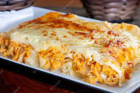

Rustic Tuscan Harmony: Savory Italian Chicken Symphony in Every Layer

Dive into the delicious world of "Rustic Tuscan Harmony: Italian Chicken Lasagna," a dish that brings the bold
flavors of Tuscany to your table. Imagine tender, shredded chicken seasoned with herbs like oregano and basil,
mixed with sautéed onions and garlic—creating a flavorful base that forms the heart of this lasagna. This tasty
combo infuses each bite with a rich, savory taste that captures the essence of classic Italian cooking.
Now, let's talk about the creamy goodness that ties it all together. Picture a smooth, cheesy sauce made with
butter, flour, chicken broth, milk, and Parmesan. This sauce bathes the layers of lasagna noodles and seasoned
chicken, creating a comforting masterpiece. Topped with melted mozzarella, the dish bakes to a golden
perfection, filling your kitchen with an irresistible aroma. "Rustic Tuscan Harmony" promises a delightful
eating experience, where every layer contributes to a tasty symphony that celebrates the heartwarming flavors of
Italian cuisine—something everyone can enjoy!
Ingredients
For the Chicken
- 1.5 pounds boneless, skinless chicken breasts, cooked and shredded
- 1 tablespoon olive oil
- 1 onion, finely chopped
- 3 cloves garlic, minced
- 1 teaspoon dried oregano
- 1 teaspoon dried basil
- Salt and pepper to taste
For the Sauce
- 2 tablespoons butter
- 2 tablespoons all-purpose flour
- 2 cups chicken broth
- 1 cup milk
- Salt and pepper to taste
- 1 cup grated Parmesan cheese
Other ingredients
- 9 lasagna noodles, cooked according to package instructions
- 2 cups shredded mozzarella cheese
Steps
Prepare the Chicken
- In a large skillet, heat olive oil over medium heat.
- Add chopped onions and garlic. Sauté until onions are translucent.
- Add shredded chicken to the skillet and season with oregano, basil, salt, and pepper.
Cook for a few minutes until well combined. Set aside.
Make the Sauce
- In a medium saucepan, melt butter over medium heat.
- Add flour and whisk continuously to create a roux. Cook for 1-2 minutes.
- Gradually add chicken broth and milk, whisking constantly to avoid lumps.
- Cook the sauce until it thickens. Season with salt and pepper.
- Stir in grated Parmesan cheese until smooth. Remove from heat.
Assemble the Lasagna
- Preheat your oven to 375°F (190°C)
- In a greased baking dish, spread a thin layer of the sauce on the bottom.
- Place three lasagna noodles on top of the sauce.
- Spread half of the chicken mixture over the noodles.
- Pour a portion of the sauce over the chicken.
- Sprinkle a layer of mozzarella cheese over the sauce.
- Repeat the layers, ending with a layer of mozzarella cheese on top.
Bake
- Cover the baking dish with aluminum foil.
- Bake in the preheated oven for 25-30 minutes or until the lasagna is hot and bubbly.
- Remove the foil and bake for an additional 10 minutes until the cheese is golden and bubbly.
Serve
- Allow the lasagna to cool for a few minutes before slicing.
- Serve the Italian Chicken Lasagna with a side salad or garlic bread.